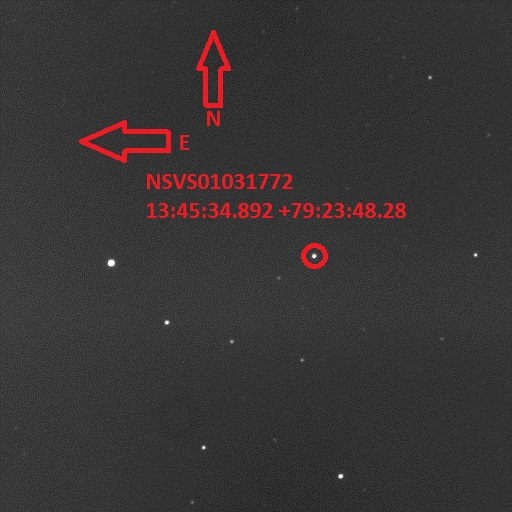
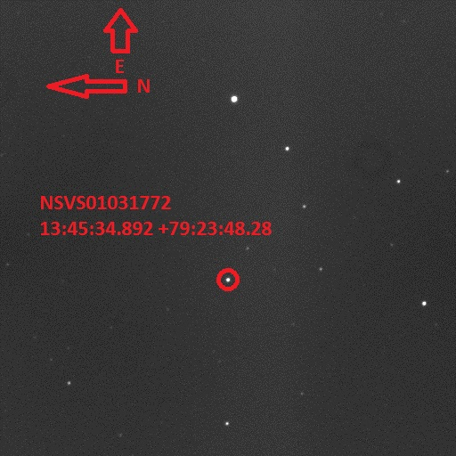

Spring 2021
In Spring 2021, I co-taught the course Astronomy/Geoscience 160, called "Life in the Universe," at the University of Wisconsin-Madison. This course is aimed at non-science majors and discusses the necessary conditions and search for life on other planets. Because of COVID-19, the course was taught remotely and asynchronously, so I have made all of my recorded lectures available online. Embedded here is a sample lecture:
A direct link to the YouTube playlist with my lectures is here: https://www.youtube.com/playlist?list=PLp3uheVNrEsxPwxraMOeEeuKTb8PXfON6.
Fall 2020
In Fall 2020, I taught the course Astronomy 236, called "The History of Matter in the Universe," at the University of Wisconsin-Madison. This course is aimed at non-science majors and is aimed at non-astronomy majors, details the history of the formation of matter, elements, galaxies, stars, and planets in the universe, and satisfies a university-wide communications requirement. Because of COVID-19, the course was taught remotely and asynchronously, so I have made all of my recorded lectures available online. Embedded here is a sample lecture:
A direct link to the YouTube playlist with my lectures is here: https://www.youtube.com/playlist?list=PLp3uheVNrEsxPwxraMOeEeuKTb8PXfON6.
Spring 2017
Eclipsing binary lab 2017 eclipse predictions. These predictions take into account the ~20 minute offset between the Lopez-Morales et al. ephemeris and the true ephemeris.Spring 2015
Eclipsing Binary Simbad entry: NSVS01031772, Harvard mirror
Lab Instructions
Eclipse Predictions
Lopez-Morales et al. Eclipsing Binary Lab Finder Charts:

{kind=link}

{kind=link}
Spring 2013
Pioneers in Engineering
Syllabi available at the preceeding links:
DeCal Materials and kit documentation can be found at the PiE wiki.
2013 PiE competition Schedule:
- Jan 31: PiE Mentoring Infosession. 7PM - 8PM in room 306 Soda (HP Auditorium)
- Feb 4: First day of Monday DeCal session
- Feb 7: First day of Thursday DeCal session
- March 2: PiE Kickoff: Meet your mentees
- March 9: PiE Gameday: Learn about the robotics challenge
- April 13: PiE Scrimmage
- April 27-28: PiE final competition